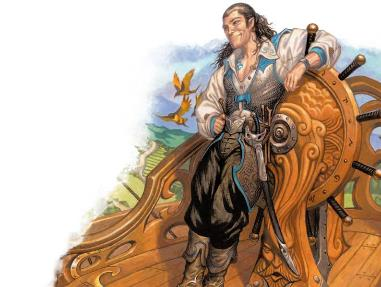

在上述的例子中，你可以采用快进的形式，只用几句话描述从A点到B点的过程，阐述这片森林有多令人感到毛骨悚然是一件容易的事，并且这些强盗足够聪明，会避开冒险队伍。但与此同时，这片森林的确十分诡异，而强盗的存在是一个设定的已知元素，你希望让玩家们意识到自己经历了一段重要的旅程。可以考虑以下选项，来让玩家（和他们的角色）参与到冒险中来。
旅行本身也有可能成为冒险。在本质上，《霍比特人The Hobbit》是一个讲述一队冒险者深入龙巢的故事……但故事的绝大多数内容是关于他们前往地牢的旅程，同样的，你的《杜·阿祖尔之墓Tomb of Dol Azur》或许是游戏的最终目标，但你可能会需要先进行几个游戏阶段才能真正到达那里，与其在随机遭遇上浪费时间，不如专注于令每一步都变得有趣而富有意义。
对于经验丰富的冒险者们而言，一般的强盗团伙不应构成威胁，但假如这片幽深森林里的强盗并不一般呢？如果每当他们被杀死时就会复活——而唯一击败他们的方法时找到并摧毁赋予他们这种能力的神器，那么现在该怎么办呢？或许冒险者们有办法制服这些强盗，但这实际上是一个道德困境，比如所谓的强盗实际上是一些罗宾汉式的英雄，他们从富人手里抢夺财物是为了给一些至关重要的事业筹集资金，例如购买药物来结束本地的一场瘟疫呢？如果以当地人的生活标准来看，这些冒险者们相当的富有，他们是否愿意以某种方式提供帮助呢？
如果你们身处一个偏远之地，冒险者们也许会发现一个古代文明的遗迹或残留物——这可能是由达坎Dhakaani地精、巨人时代的龙、或甚至是由恶魔时代的羽蛇或邪魔们所建造的东西。这一发现可能纯粹是一个有趣的奇观——一尊不可摧毁、不可移动的羽蛇雕像悬浮在一个神秘的铭文正上方——这一发现可能在战役更晚些时候变得重要，又或者它可能已经非常强大和危险……甚至可能是这片土地被人所回避的原因。
冒险者们找到了一个旅馆或一个被友好旅行者们使用的营地，他们热情地欢迎冒险者在这里进行一次长休。但麻烦也随之而来，也许是一起谋杀案；也许是一位客人指责另一位客人是一个变节的战犯——并且这些罪行影响了其中一个玩家角色；也许是一个商人正在出售一些看起来棒到令人难以置信的物品，你能信任这些来自旅行者的礼物吗？
在艾伯伦的几乎任何地方，添加一个显能区域都会给一个原本平凡的地区带来意想不到的扭曲变化，没有人会深入幽深森林的核心区域……这也就是为什么从未有人意识到这座坟墓位于一个通向撒法拉斯Shavarath的显能区域中！为了到达那里，冒险者们必须以某种方式穿越交战中的天使与恶魔的战线。又或者这座坟墓位于一个通向杜鲁尔Dolurrh的显能区域，冒险者们必须直面过去的幽灵或是克服沉重的倦怠感才能继续前进。意外显能区域表提供了一些灵感，以启发您的创意：
|
d12 |
显能区域 |
|
1 |
达安维Daanvi。一个达安维Daanvi魔鬼告诉团队，穿越这个区域需要支付一些通行费用——而他们已经因进入了这片区域而产生了通行费，每位冒险者需要交出身上一件对于他们而言具有个人价值的物品，打败魔鬼是避免支付费用的方式之一，但这样做可能会在未来招致来自达安维的起诉。 |
|
2 |
杜鲁尔Dolurrh。冒险者们听到了带着未竟事业死在这里的人们的幽灵之声——从达坎Dhakaani地精和前-伽利法pre-Galifar人到最近的最近的死者，例如在终末战争中死去的一个带有未传递的关键信息的间谍。冒险者们会去尝试解决这些未了的债务吗？ |
|
3 |
费尼亚Fernia。这片荒野着火了，植被会永远燃烧而不被消耗，但火焰依然产生了致命的热量，火元素不安分地游荡着。费尼亚的智慧居民是否会在火中显现？他们会对冒险者提出什么要求？ |
|
4 |
伊瑞安Irian。一个孤独的不死隐士居于此地，靠这里的正能量维持生命。这个隐士有多大的岁数？他又掌握了哪些秘密？ |
|
5 |
奇斯瑞Kythri。冒险者们遇到了一处史拉蟾slaad前哨站；如果你有《探秘艾伯伦Exploring Eberron》手册，请在第5章的史拉蟾文化表Slaad Cultures上投掷一次。史拉蟾是否坚持让冒险者享受它们的款待？又或者他们对外来者入侵他们的领地而感到愤怒？ |
|
6 |
拉玛尼亚Lamannia。一头巨大的野兽挡住了冒险者们的去路，你的队伍将如何回避或安抚这只巨兽呢？ |
|
7 |
玛博尔Mabar。冒险者们发现了一个只有栩栩如生的骷髅占领的露营地或农场，这里是否有珍贵的宝藏或秘密可以被找到……又或者在这些脆弱的骷髅中还隐藏着更加危险的不死生物？ |
|
8 |
瑞西亚Risia。这片地区异常的寒冷，冒险者们必须抵御住致命的低温影响，他们是否会发现被永恒冰封于瑞西亚冰川之下的生物？ |
|
9 |
撒法拉斯Shavarath。一支天使军队正在与一群恶魔交战，而冒险者们必须安全地穿过这片争夺中的领地，他们是否有被征召入伍的风险？ |
|
10 |
西拉尼亚Syrania。冒险者们找到了通往无限集市Immeasurable Market的大门，但这是一扇单向通行门，一旦他们从门中穿过，他们该如何求购到返回的通行证？ |
|
11 |
瑟兰尼斯Thelanis。一个或更多的树精试图与冒险者们交流，如果冒险者们表现粗鲁或直接威胁这些树精们，是否会出现一位妖精树人要求他们进行道歉？ |
|
12 |
瑟瑞奥特Xoriat。冒险者们被困在了一个封闭的空间循环里，向前移动只会将他们带回到开始的地方，他们是否能想出一种新颖的方式来逃离这个异常空间呢？ |

上文中提出的建议可以成为一种设计一次令人难忘的旅途的有趣方式，然而，逐个演出这些场景亦需时间，如果这次冒险核心有一个强故事性驱动的情节，你可能并不想用太多的支线情景来淡化它。当你没有时间让一场与强盗的遭遇变得有趣，但又不想吧旅途的过程搪塞过去时，你会怎么做？一个我最喜欢的工具就是旅行蒙太奇。我会想出一些冒险者可能会在旅途中遇到的短小有趣的挑战，然后我会让玩家各自处理其中的一个情景，因此，假设这个队伍有一个游荡者、一个法师、一个战士和一个牧师，我可能会这样告诉他们：
游荡者：“告诉我你如何帮助这支队伍在第一天规避来自强盗的袭击。”
法师：“你们受困于持续的暴风雨，到了第二天，你们的衣服湿透了，穿过这里的河流上的桥也被冲走了，如何使用你的魔法，来帮助队伍穿越这条河呢？”
战士：“这片森林比人类的文明还要古老，你敢确信你听到了风中从传来的鬼魂哭嚎，并看到有东西在阴影中移动。你以你的勇气著称……在这次旅途中，有什么事情让你实际感到了害怕呢？”
牧师：“告诉我关于你在旅途最后一晚所做的梦。”
这些情景让每个玩家都有了属于自己的一刻，并鼓励玩家思考旅程中对于他们而言的有趣的地方，当然，任何角色都可以想出如何渡河的方法，但是在这一次，是法师想出了点子……并告诉我如何执行。根据玩家提出的想法，你可以将他们的答案融入到战役中，也许牧师的梦境会成为预言、那个吓唬战士的东西会意外地回来，又或者游荡者与强盗们的首领在他们的第一个行会里相处友好——如果是这样，那个领袖可以以更有趣的角色定位再次回归。
或者，玩家们也可能只是拿这些情节来开玩笑：真正吓到战士的是看到看到游荡者在吃东西或听到牧师在打鼾，而这里什么异常也没有！以上所有的假设指向于让玩家讲述他们想要的故事，如果他们想笑，这会是一次绝佳的机会。无论如何，目标是让玩家们想象这次旅行，并思考它会对他们的角色产生什么影响。
如果你想增加更多的悬念，基于他们提出的每个解决方法，你可以要求一次能力检定来克服障碍：如果游荡者尝试与强盗们谈判，他们困难会需要进行一次魅力（欺瞒或游说）检定；如果法师使用魔法来穿越河流，你可以要求一次智力（奥秘）检定来确定其具体效果如何；你可以要求牧师进行一次感知（宗教）检定以获得他们在梦中窥得的灵感。进行以上操作时，请确保已经考虑到了当出现坏的掷骰结果时的后果，如果时间非常紧迫，那么它可能产生的唯一后果是队伍被拖延，否则，角色可能会增加一级力竭状态，或失去一些生命骰——他们通过了挑战，但旅途非常辛苦。你也可以给予玩家们一个选择：你想增长一级力竭，还是使用两瓶生命药水？在这次悲惨的过河之旅中，你失去了一些物品——它们是什么？而你该如何应对？
无论你使用哪种方法或设置哪些挑战，蒙太奇的目标都是创造一个有趣的故事以帮助玩家们想象出他们的角色经历了一次怎样的旅行，只要玩家们享受这次经历，那么你就成功了！